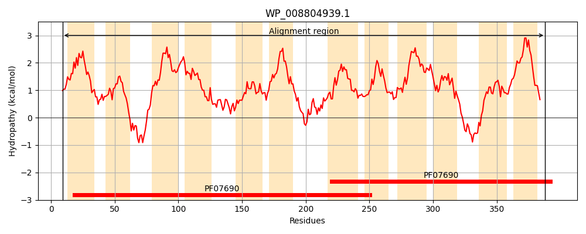
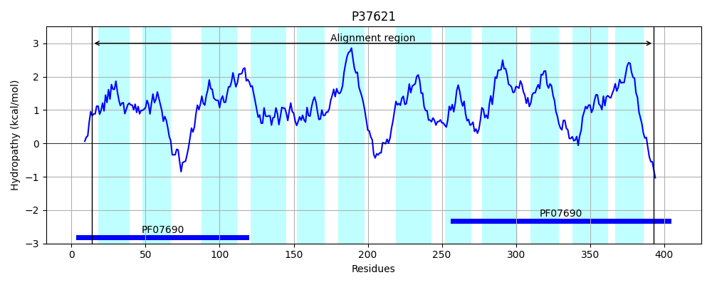
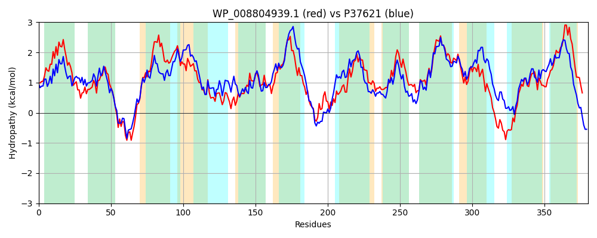

Hit Accession: P37621
Hit TCID: 2.A.1.46.7
Hit Description: gnl|BL_ORD_ID|10112 gnl|TC-DB|P37621|2.A.1.46.7 UPF0226 protein yhhS OS=Escherichia coli (strain K12) GN=yhhS PE=1 SV=2
Mach Len: 380
e:0.000000
Query TMS Count : 12
Hit TMS Count: 12
TMS-Overlap Score: 11.550000
Predicted Substrates:CHEBI:5510;glyphosate, CHEBI:22599;arabinose
BLAST Alignment:
Score: 1054 , Bit scores: 410 bits, E-value: 2.3e-142, Alignment length: 380, Percentage identity: 53
Query: 9 QLNLRIISIVVFTCICYLSIGLPLAVLPGYIHYQLGYSTFVAGIVISLQYISTLISRPHAGRYTDIWGPKKVVSLGIICCLLSGAFTLLAVLLQATPMLAIAALLAGRVFLGVGESFTATGATLWGIKTVGAIHTSRVISWNGVATYVAMAIGAPLGVTLNHYFGISGFATVVVVVAAIGLLFARTRQDVSVTAGVRAPFHAVVRKIWPYGLGLAFGTVGFGVIATFITLYFAAHSWQGAAFTLSLFSVGFICVRLVLGNTITRYGGVPVSLVCFVIECLGLLLIWLAPSAWVAGVGAFLTGSGFSLVFPALGVEAVKQVEEQNQGTALGTYSAFLDLALGLTGPLAGWVAGFYDLATLYLLAAIVVVFAFLLILRVQRQ 388
+LNLRI+SIV+F YL+IGLPLAVLPGY+H +G+S F AG+VISLQY +TL+SRPHAGRY D GPKK+V G+ C LSG L A L + P++++ L GRV LG+G+SF TG+TLWG+ VG++H RVISWNG+ TY AMA+GAPLGV H+ G+ A +++ VA + +L A R V + G PF AV+ ++W YG+ LA + GFGVIATFITL++ A W GAAF L+LFS F+ RL+ N I R GG+ V+++CF +E +GLLL+ +A W+A +G L G+GFSLVFPALGV AVK V +QNQG AL TY+ F+DL+LG+TGPLAG V + + +YL AA +V A LL R++++
Sbjct: 14 RLNLRIVSIVMFNFASYLTIGLPLAVLPGYVHDVMGFSAFWAGLVISLQYFATLLSRPHAGRYADSLGPKKIVVFGLCGCFLSGLGYLTAGLTASLPVISLLLLCLGRVILGIGQSFAGTGSTLWGVGVVGSLHIGRVISWNGIVTYGAMAMGAPLGVVFYHWGGLQALALIIMGVALVAILLAIPRPTVKASKGKPLPFRAVLGRVWLYGMALALASAGFGVIATFITLFYDAKGWDGAAFALTLFSCAFVGTRLLFPNGINRIGGLNVAMICFSVEIIGLLLVGVATMPWMAKIGVLLAGAGFSLVFPALGVVAVKAVPQQNQGAALATYTVFMDLSLGVTGPLAGLVMSWAGVPVIYLAAAGLVAIALLLTWRLKKR 393 | Protein Hydropathy Plots: |
|---|
|  |  |
Pairwise Alignment-Hydropathy Plot:
|
|---|
|  |